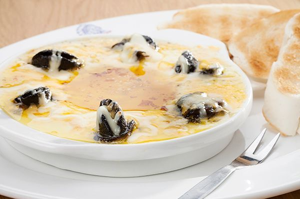

Garlic Snails

Description
A delicious, creamy garlic sauce with snails served with crispy toast.
Ingredients
- 200g Canned Snails
- 1tbs Garlic
- 2tbs butter/margarine
- 250g Fresh Cream
- 25g White Onion Soup Powder
- Salt
- Pepper
- Milk
- Bread of choice
Steps
- On medium high heat, melt margarine
- Add garlic and fry for 5 minutes
- Add snails and fry for another 5 minutes
- Add soup powder and stir, coating all the snails in the powder
- Add the cream, and salt and pepper to taste
- Bring to a simmer, then lower the heat and let the mixture simmer for 10 minutes
- If sauce is to thick, add milk to thin it out
- Toast your bread and serve
Back to Home Page